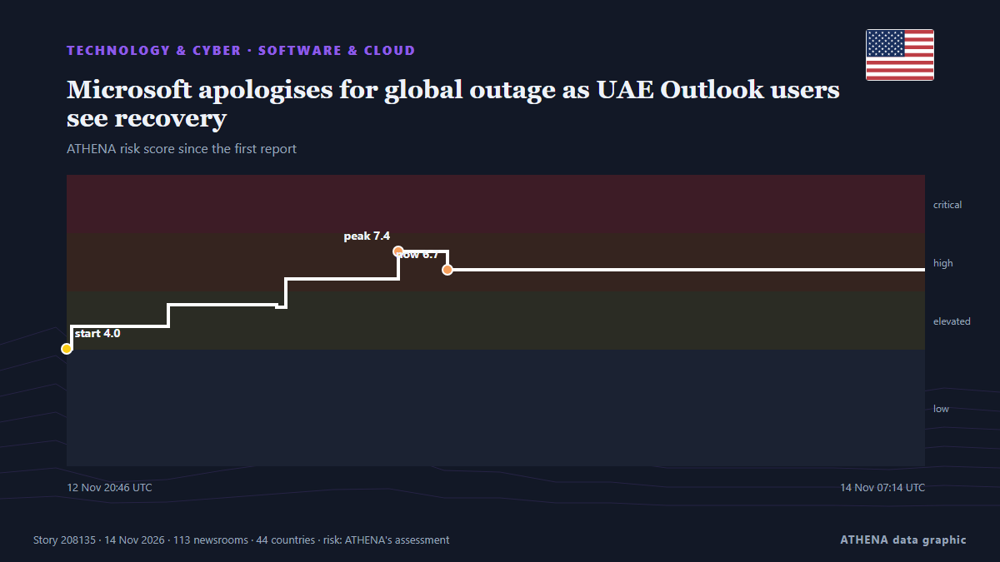

Microsoft apologises for global outage as UAE Outlook users see recovery

Microsoft services top UAE outage reports Microsoft Outlook, Microsoft 365 and Microsoft Teams were the three most reported services on Downdetector’s UAE site on Friday morning, with sharp spikes in… from Gulf News
What changed 94 new reports from 66 outlets in the last 24 hours.
See the sources ›Evidence: Strong
Reported independently by 113 outlets in 44 countries since 12 Nov, first by CNA (Channel NewsAsia); coverage is fading. ATHENA rates the risk high (6.5/10), driven mainly by the severity of the harm described and its geographic and sector reach. Confidence is 85% (high), with 113 independent outlets corroborating it and an average source reliability of 72%. Outlets by country: United States (13), Australia (5), Singapore (4). Coverage: 12 Nov to 14 Nov, 37 hours.
What changed: 94 new reports from 66 outlets in the 24 hours to 14 Nov.
First reported as: Microsoft Outlook Goes Down In 365 Outage, Paralyzing Business Communication
AutomatedSelected, grouped and scored by ATHENA's published method from 36 independent outlets. The headline is the outlet's own; ATHENA's sentences follow fixed patterns - no generative AI writes them. How it works →
How to read this page
- What you are reading
- 113 outlets in 44 countries reported this event. The reports below are listed in the order they appeared; each headline opens the original article. ATHENA writes none of the reports.
- Our reading
- For the record — The reports describe a completed, domestic, commercial or personal matter. We list it so you can see who reported it and when. We are not tracking a risk of wider conflict here.
- How much evidence
- Strong Many independent outlets in many countries describe the same event.
After repeats, off-topic items and stale reports are removed, 33 of the 40 listed reports are counted; 100% of the headlines match the event.
- What this does not mean
- ATHENA measures how an event is reported, not whether it is true. This is not a forecast, a judgement on who is right, or advice.
- What would change it
- Reports from other independent outlets showing a different development, or a firm confirmation or denial from an official source.
Reading R2 · refreshed with every update of this page. ATHENA has not yet published a track record for these readings; when it does, it will be linked here.
At a glance
Selected, scored and written by ATHENA's published methodology. No editor intervenes in individual events. How this is produced ›
| 12 Nov 18:32 UTC | 12 |
|---|---|
| 12 Nov 20:32 UTC | 16 |
| 12 Nov 22:32 UTC | 5 |
| 13 Nov 00:32 UTC | 7 |
| 13 Nov 02:32 UTC | 14 |
| 13 Nov 04:32 UTC | 20 |
| 13 Nov 06:32 UTC | 27 |
| 13 Nov 08:32 UTC | 29 |
| 13 Nov 10:32 UTC | 14 |
| 13 Nov 12:32 UTC | 13 |
| 13 Nov 14:32 UTC | 5 |
| 13 Nov 16:32 UTC | 5 |
| 13 Nov 18:32 UTC | 1 |
| 13 Nov 20:32 UTC | 1 |
| 13 Nov 22:32 UTC | 1 |
| 14 Nov 00:32 UTC | 1 |
| 14 Nov 02:32 UTC | 0 |
| 14 Nov 04:32 UTC | 4 |
| 14 Nov 06:32 UTC | 2 |
| 12 Nov 20:46 UTC | 4.0 |
|---|---|
| 12 Nov 20:59 UTC | 4.8 |
| 13 Nov 00:52 UTC | 5.5 |
| 13 Nov 05:13 UTC | 5.5 |
| 13 Nov 05:35 UTC | 6.4 |
| 13 Nov 10:05 UTC | 7.4 |
| 13 Nov 12:04 UTC | 6.7 |
| 14 Nov 07:15 UTC | 6.5 |
Why these numbers
Importance
How widely and how prominently the story is reported.
Risk
What the reports describe, scored for possible harm. It is not a forecast.
Confidence
How well independent outlets support the story.
The reporting — who reported it, and when
headline as published · opens the original- CNA (Channel NewsAsia) · SingaporeMicrosoft 365, Outlook down for thousands of US users, Downdetector shows
- Deadline · United StatesMicrosoft Outlook Still Down In 365 Outage: Company Sees Sporadic Improvements, Though No Sustained Recovery
- TechCrunch · United StatesMicrosoft’s Outlook email hit by new outage
- The Canadian Press (via CityNews) · CanadaWidespread outage hits Outlook, other Microsoft apps
- NBC News (World) · United StatesMicrosoft services hit by major outage across the world
- ABC News Australia · AustraliaMicrosoft platforms including Outlook suffering widespread outages
- ZDNet · United StatesMicrosoft blames major outage on a July update defect – and two other factors
- Wired · United StatesMajor Microsoft Outlook Outage Leaves People With Email Jobs Unable to Email
- Nile Post · UgandaMicrosoft struggling to restore service as global outage affects Outlook and Teams
- BleepingComputer · United StatesMassive Microsoft 365 outage disrupts Outlook, Teams, Copilot worldwide
- Forbes Business · United StatesMicrosoft 365 Down: Tech Giant Says Server Failures Causing Disruption
- ABC News Australia · AustraliaLive: Microsoft 'aggressively pursuing' solution to major outage
- Cyprus Mail · CyprusMicrosoft outage drags on for hours, disrupting Outlook, Teams for businesses and governments
- SecurityWeek · United StatesMicrosoft 365 Outage Disrupts Outlook, Exchange Online and Teams
- Al Jazeera English · QatarMicrosoft working ‘urgently’ to fix outages
- DW English · GermanyMicrosoft reports mass outages in US, impacting customer accessibility
- Free Malaysia Today · MalaysiaMicrosoft 365, Outlook down for thousands of US users
- Sydney Morning Herald · AustraliaMicrosoft’s attempts to resolve major outage ‘not working as expected’
- RTÉ News · IrelandMicrosoft connectivity issues across 'multiple regions'
- SBS News · AustraliaMicrosoft services not 'fully returned to baseline' as recovery from outage continues
- Fast Company · United StatesOutlook is down. Exhausted working Americans are begging Microsoft to take its time bringing it back up
- The Independent · United KingdomIs Outlook down? Widespread outage hits Microsoft and OpenAI
- The Guardian · United KingdomMicrosoft outage: company scrambles to fix global issue that took down Outlook and Teams
- CBC News (alternative feed) · CanadaMicrosoft outage continues as planned fixes are not working as expected, company says
- The Straits Times · SingaporeMicrosoft races to fix Outlook on one of its longest outages
- CNBC World · United StatesMicrosoft apologizes for massive outage that took down Outlook and other 365 services
- The Hollywood Reporter · United StatesMicrosoft Goes Down, and the Media Business Takes Off Early
- Stuff · New ZealandMicrosoft says they see ‘stabilisation’ as outage causes global disruption
- The Business Times · SingaporeMicrosoft outage drags on for hours, disrupting Outlook, Teams for businesses and governments
- Sydney Morning Herald · AustraliaGlobal outage for Microsoft
- The Verge · United StatesMicrosoft Outlook is still down
- Mainichi (English) · JapanIs Outlook down? Widespread outage hits Microsoft email and other apps
- Stuff · New ZealandHouse move thrown into limbo by Microsoft outage
- Times of India · IndiaMicrosoft begins restoring services after global outage hits 365 suite
- NPR · United StatesIs Outlook down? Widespread outage hits Microsoft email and other apps
- BusinessWorld · PhilippinesMicrosoft outage drags on for hours, disrupting Outlook, Teams for thousands
- NDTV · IndiaGlobal Outage Hits Microsoft, Outlook, Other 365 Services Down
- Le Monde (English) · FranceMicrosoft starts seeing 'improvements' after global Outlook outage
- CNA (Channel NewsAsia) · SingaporeMicrosoft Outlook outage: Disruptions hit workers worldwide amid setback in recovery efforts
- Gulf News · United Arab EmiratesMicrosoft apologises for global outage as UAE Outlook users see recovery